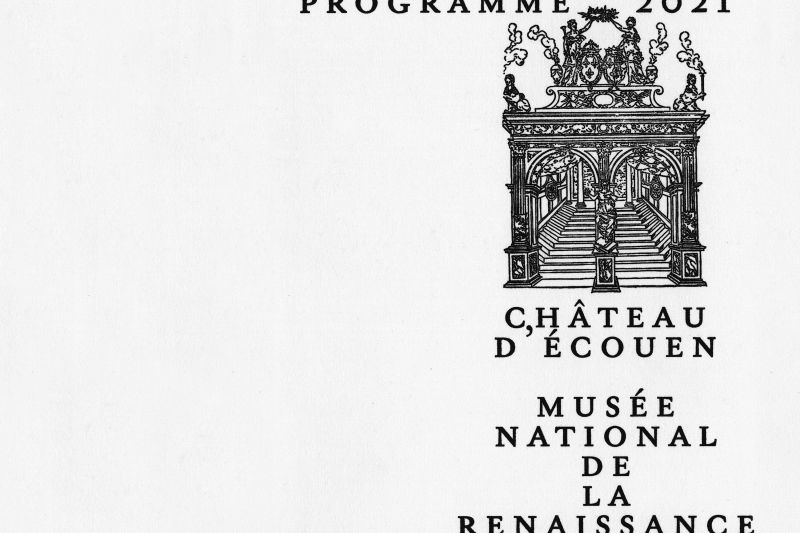

Zoo
Contact
Team
Clients
Projects
Tous
Courants Verts

Château d'écouen
MOCO Montpellier Contemporain
Amos Sport Business School
architectures CREE magazine
IDHEAL
Rero Via Negativa - Skira
Terabilis Paysage
37 Quai Branly, Paris